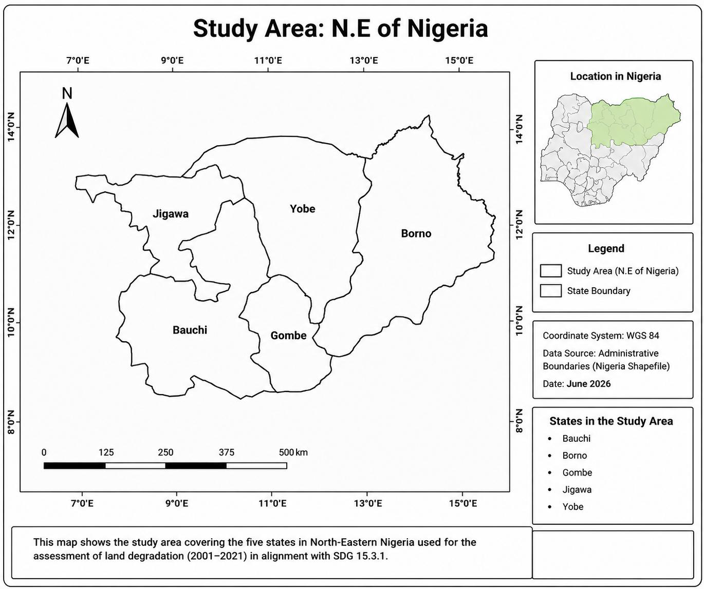
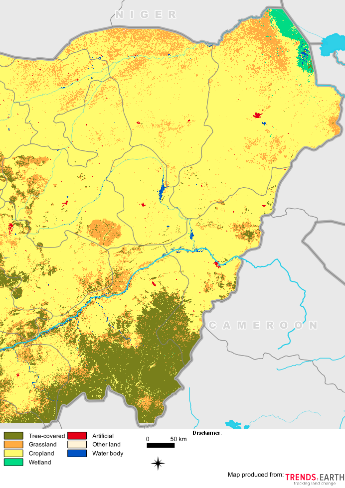
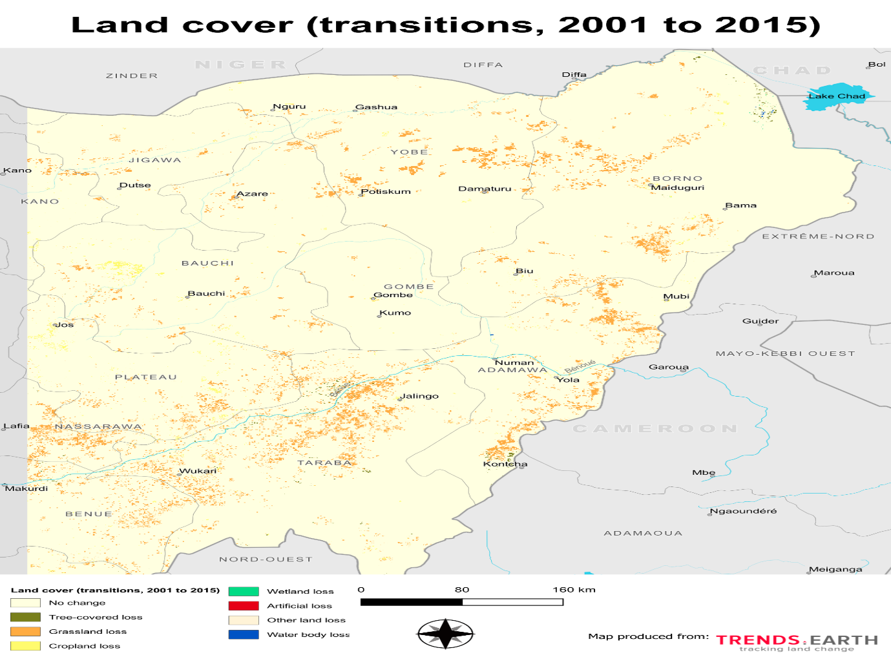
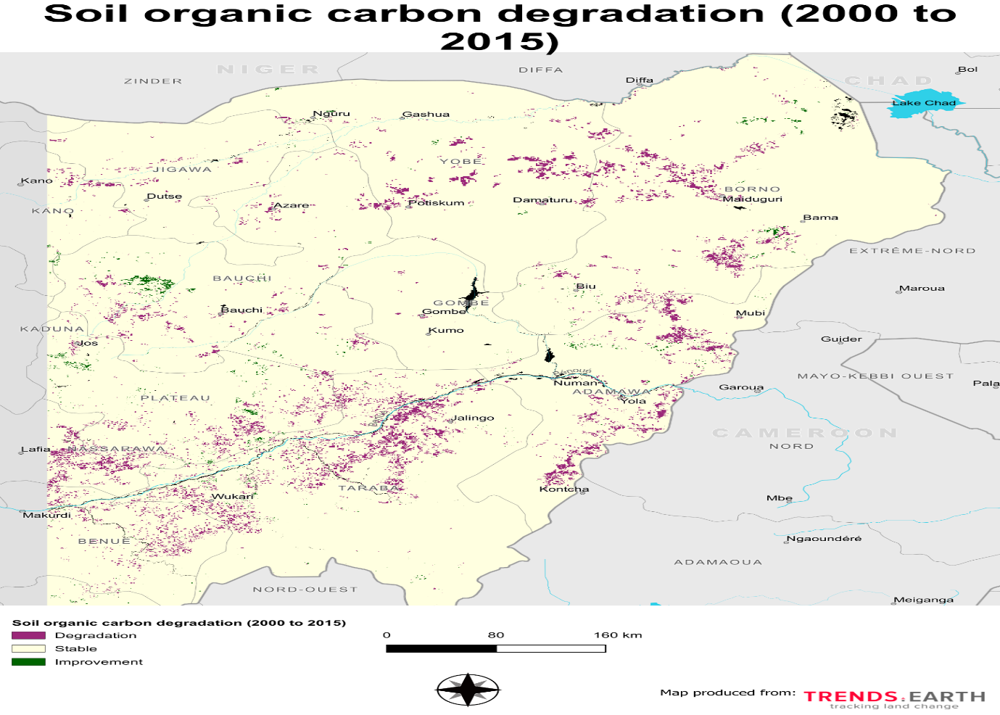

Land Cover
Evaluates changes in land-cover classes and identifies conversions that may indicate degradation or improvement.
A GIS and Earth-observation assessment of land degradation using the United Nations SDG Indicator 15.3.1 framework, integrating land-cover change, land productivity and soil organic carbon indicators.
Land degradation affects ecosystem productivity, agricultural sustainability, soil quality and long-term environmental resilience. This project assessed degradation patterns across North-Eastern Nigeria using the SDG Indicator 15.3.1 framework.
The analysis integrated land-cover change, land-productivity trends and soil-organic-carbon conditions to identify areas characterized by degradation, stability and improvement.
The approach follows the One-Out, All-Out principle, in which degradation detected in any of the three sub-indicators can contribute to the final assessment of land condition.
The study focuses on a large transitional landscape extending between savannah and Sahel environments.
The region is strongly influenced by agricultural activity, rainfall variability, grazing pressure, vegetation loss and other environmental pressures that can contribute to land degradation.
The assessment covers five states: Bauchi, Borno, Gombe, Jigawa and Yobe.

The assessment is based on three environmental sub-indicators used for monitoring Land Degradation Neutrality.
Evaluates changes in land-cover classes and identifies conversions that may indicate degradation or improvement.
Assesses long-term changes in vegetation productivity and identifies areas experiencing persistent decline or recovery.
Evaluates changes in soil carbon stocks as an indicator of soil condition and ecosystem functioning.

The land-cover analysis shows that cropland occupies the largest proportion of the study area.
Tree-covered vegetation is more prominent in the wetter southern areas, while the northern region transitions toward drier Sudan and Sahel savanna environments.
Land-cover transition analysis was used to identify the spatial distribution of land conversions across the region.
The most common changes involved grassland loss and cropland loss, while smaller transitions affected tree-covered land, wetlands, artificial surfaces and water bodies.
Most locations remained unchanged, but the transition map highlights areas experiencing stronger human and environmental pressure.


Soil organic carbon provides an important indicator of ecosystem condition and soil quality.
The assessment identifies spatially uneven degradation, stability and improvement. Lower carbon conditions are generally associated with the drier northern environments, while higher vegetation cover supports stronger carbon storage in southern areas.
Areas showing SOC degradation may indicate vegetation loss, erosion, declining organic matter and continuing pressure on soil resources.
Land productivity was evaluated for the 2001–2015 baseline period to identify areas experiencing significant vegetation decline, stability or improvement.
Stable productivity occurred across large portions of the study area, but degradation was concentrated in several agricultural and environmentally sensitive landscapes.
Declining productivity was particularly evident in parts of Bauchi, Gombe, southern Yobe and southern Borno.

Agriculture occupies the largest share of the regional landscape, reflecting the importance of farming to local livelihoods.
Degradation occurs in concentrated areas associated with agricultural pressure, vegetation loss and environmental stress.
Several cultivated and semi-arid areas show declining long-term vegetation productivity.
Some localized areas show improvement, but these gains do not eliminate broader degradation pressures.
The results demonstrate that land degradation is spatially uneven and results from interacting environmental and human pressures.
Agricultural expansion, grazing pressure, vegetation clearance and climatic stress are important factors in explaining the observed distribution of degradation.
The combined use of land-cover, productivity and soil-carbon indicators provides a more comprehensive assessment than any single indicator considered independently.
Degraded areas can be identified and prioritized for reforestation, vegetation restoration and soil-conservation interventions.
Earth-observation data can support repeated assessments of land degradation and restoration effectiveness.
The framework supports regional monitoring of progress toward SDG 15.3.1 and Land Degradation Neutrality.
This project strengthened my understanding of how internationally standardized environmental indicators can be translated into practical geospatial assessments.
I gained experience in interpreting land-cover transitions, vegetation-productivity trends and soil-organic-carbon changes within a single land-degradation framework.
The project also demonstrated the value of Earth-observation tools for monitoring large regions where field-based environmental assessment may be expensive or difficult.
← Back to Projects